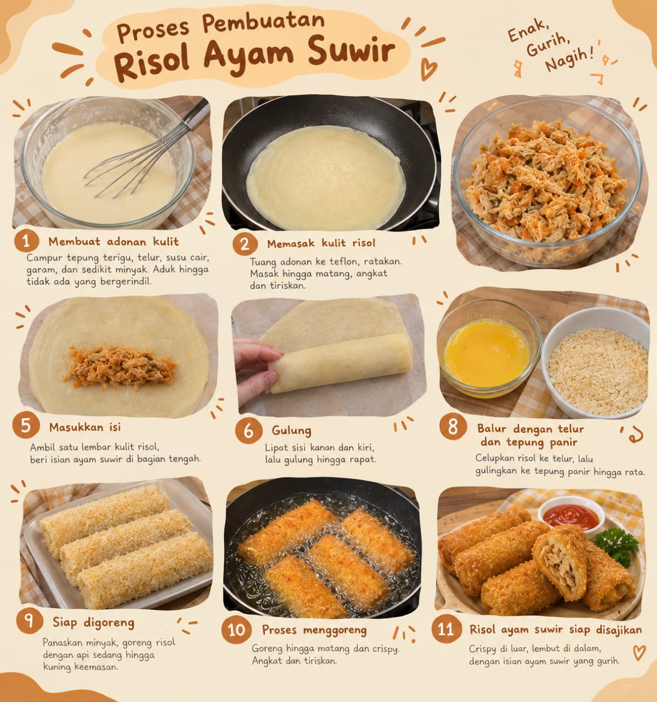

Lewati ke konten utama
Risol Gurih
Beranda
Tentang Kami
Produk
Galeri
Galeri Risol Gurih
Media Usaha
Berbagai varian Risol Gurih.

Proses pembuatan produk risol.
Nikmati Momen Bersama Risol Gurih
Nada uji singkat memastikan elemen audio dan kontrol browser dapat diperiksa.
Browser Anda tidak mendukung pemutar audio.